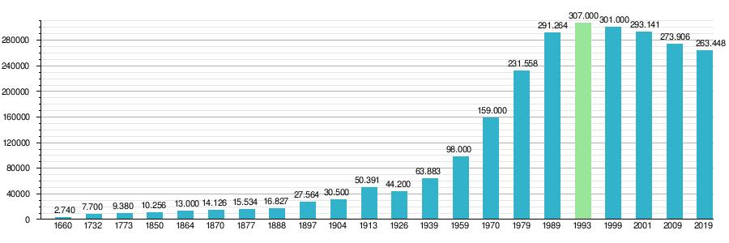
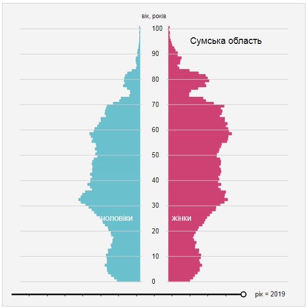
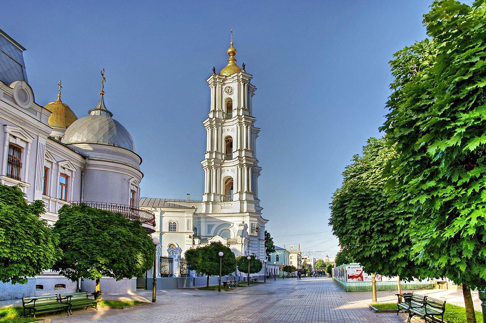

Населення Сумської області станом на лютий 2013 року становило 1142,3 тис. мешканців.
775,4 тис. осіб (67,9% населення області) проживає у 35 міських населених пунктах (15 містах та 20 селищах міського типу).
366,9 тис. осіб (32,1% населення області) у 1498 селах. Густота населення області у 2013 р. становила 47,9 осіб на кв.км, що на 36% менше ніж в середньому по країні.
775,4 тис. осіб (67,9% населення області) проживає у 35 міських населених пунктах (15 містах та 20 селищах міського типу).
366,9 тис. осіб (32,1% населення області) у 1498 селах. Густота населення області у 2013 р. становила 47,9 осіб на кв.км, що на 36% менше ніж в середньому по країні.

Кількість постійного населення
(на 1 січня відповідного року)
РІК: 2019
Всього:
чоловіки:495252, жінки:583974, разом:1079226 (осіб)
співвідношення ж/ч:1.179
Статево-вікова піраміда Сумської області, 2019 рік
(на 1 січня відповідного року)
РІК: 2019
Всього:
чоловіки:495252, жінки:583974, разом:1079226 (осіб)
співвідношення ж/ч:1.179
Статево-вікова піраміда Сумської області, 2019 рік
В історії існування міста були як періоди зростання чисельності населення так і зменшення, змінювався і національний склад.
При заснуванні міста в 1652 році козаками-переселенцями, поселення було повністю українське, але з часом почала з'являтися російська діаспора.
За даними першого перепису населення проведеного 1660 року, Суми мали 2740 жителів.
В 1650–1770 роках місто швидко розвивалося і населення його зростало, до 1770-х років Суми бувши найбільшим містом Слобожанщини мали вже близько 10 тис.
населення бувши на той час одним з найбільших міст на території сучасної України.
Але після скасування Слобідської автономії 1765 року, адміністративний і економічний центр Слобожанщини почав зміщуватися до Харкова,
разом з тим Суми почали занепадати і населення міста протягом 1770–1850 років практично не зростало, так і залишалося 10-ти тисячним.
При заснуванні міста в 1652 році козаками-переселенцями, поселення було повністю українське, але з часом почала з'являтися російська діаспора.
За даними першого перепису населення проведеного 1660 року, Суми мали 2740 жителів.
В 1650–1770 роках місто швидко розвивалося і населення його зростало, до 1770-х років Суми бувши найбільшим містом Слобожанщини мали вже близько 10 тис.
населення бувши на той час одним з найбільших міст на території сучасної України.
Але після скасування Слобідської автономії 1765 року, адміністративний і економічний центр Слобожанщини почав зміщуватися до Харкова,
разом з тим Суми почали занепадати і населення міста протягом 1770–1850 років практично не зростало, так і залишалося 10-ти тисячним.

В 1850 році в Сумах оселилася родина Харитоненків, завдяки цукровій індустрії і щедрому меценатству яких населення міста протягом 1850–1913 років зросло у 5 разів — до 50 тис. людей.
У 1917–1943 роки через війни і голод населення міста зазнавало великих втрат і зростання практично не було. Після 1943 року Суми будучи вже центром області, почали швидко розвиватися.
За 1943–1993 населення міста зросло приблизно у 6 разів, досягнувши свого максимуму — 307 тис. За цей період також значно збільшилася російська діаспора міста.
У 1993–2013 роках населення постійно знижувалося через демографічну кризу та важку економічну ситуацію в Україні.
У 1917–1943 роки через війни і голод населення міста зазнавало великих втрат і зростання практично не було. Після 1943 року Суми будучи вже центром області, почали швидко розвиватися.
За 1943–1993 населення міста зросло приблизно у 6 разів, досягнувши свого максимуму — 307 тис. За цей період також значно збільшилася російська діаспора міста.
У 1993–2013 роках населення постійно знижувалося через демографічну кризу та важку економічну ситуацію в Україні.